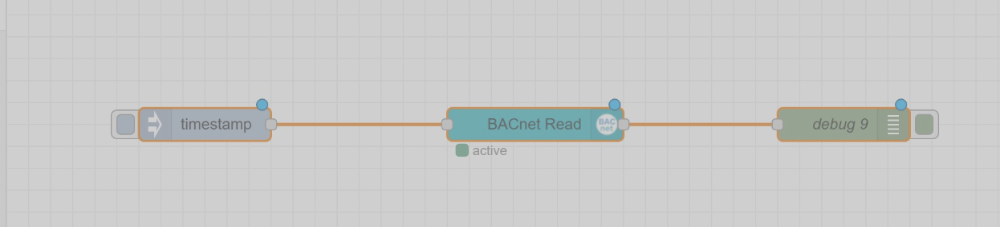
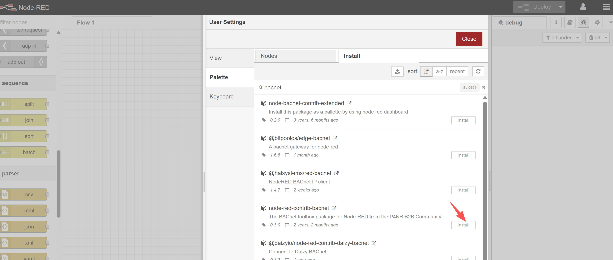
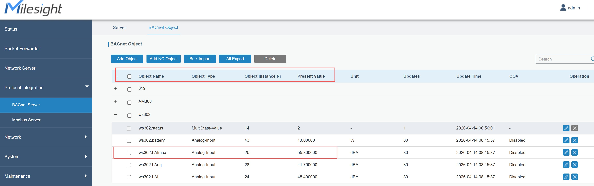
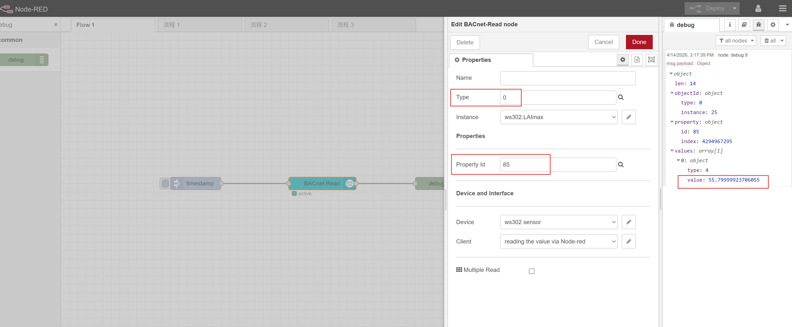
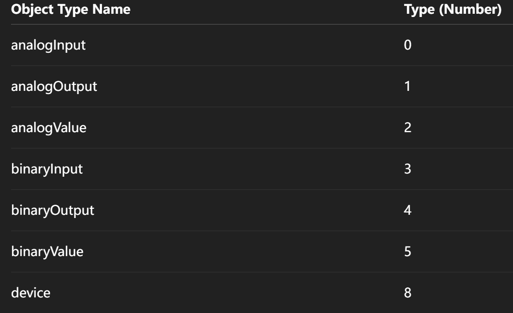
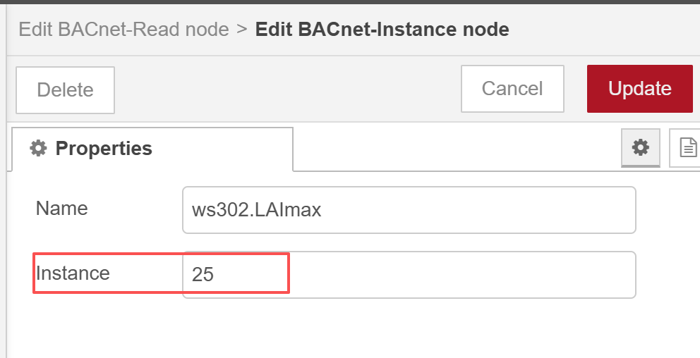
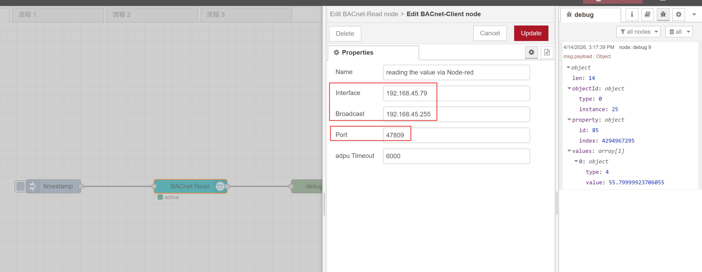
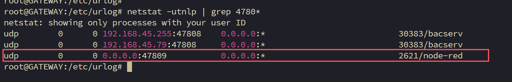

How to Use Node-RED to Read Object Values from a Gateway BACnet Server
How to Use Node-RED to Read Object Values from a Gateway BACnet Server

| Version | Update Time | Description | Author |
| 1.0 | Apr 18, 2026 | Initial version | Aurora |
Description
This article will describe how to Use Node-RED to Read Object Values from a Gateway BACnet Server.
Requirement
Milesight gateway
Milesight sensor
| Workflow: |  |
Step 1:
Install the node-red-contrib-bacnet module on the gateway.
 |
Step2：In the BACnet-Read node, please configure the Type, Property ID, as well as the device and client information.






Json:
[{"id":"b0277587648f3d0a","type":"tab","label":"Flow 1","disabled":false,"info":"","env":[]},{"id":"1ed0f54dcd3c25a0","type":"BACnet-Read","z":"b0277587648f3d0a","name":"","objectType":"","instance":"","propertyId":"","device":"","server":"","multipleRead":false,"x":480,"y":280,"wires":[["b948d115a98aadee"]]},{"id":"e8587ebfe23ec87a","type":"inject","z":"b0277587648f3d0a","name":"","props":[{"p":"payload"},{"p":"topic","vt":"str"}],"repeat":"","crontab":"","once":false,"onceDelay":0.1,"topic":"","payload":"","payloadType":"date","x":200,"y":280,"wires":[["1ed0f54dcd3c25a0"]]},{"id":"b948d115a98aadee","type":"debug","z":"b0277587648f3d0a","name":"debug 1","active":true,"tosidebar":true,"console":false,"tostatus":false,"complete":"false","statusVal":"","statusType":"auto","x":760,"y":280,"wires":[]}]
--end